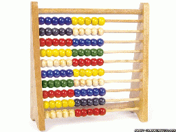
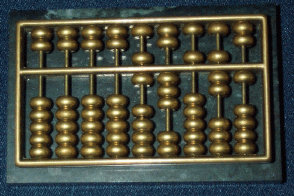
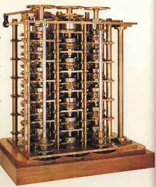
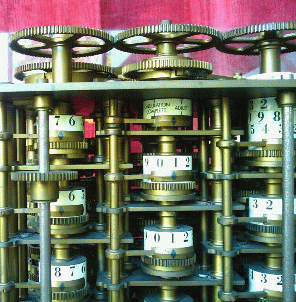
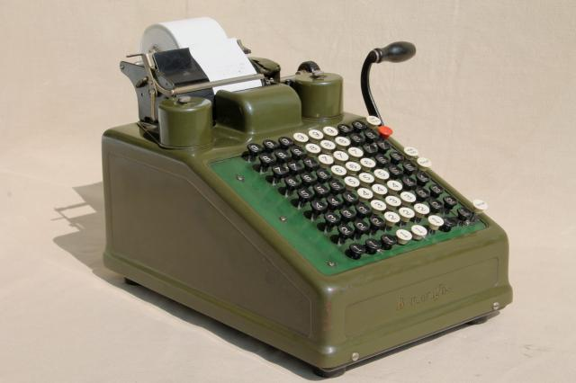

|
|
|
The Computer was invented by Alan Turing during World War II (to break the German Enigma code)
| Toy abacus | Real abacus |
|---|---|
|  |  |
|
|
| Babbage's difference engine | Close-up of the mechanics |
|---|---|
|  |  |
|
|  |
Not the same model that I used, but it's similar. The device can only add and subtract.
Initially, you press the clear button and pull the lever to reset the running sum to 0.
To add a number to the running sum, you press the black and white buttons to form the number you want to add and pull the lever on the right: the input number is added to the running total. After the addition, the buttons will pop up by themselves (so you can enter a new value to add).
BTW: there is no 0 digit - if you do not press any button in a column, the digit in that column is equal to 0.
If you press the red button, the machine will perform subtraction
You can sorta multiply too: one of the button in the right most column will lock the digits pressed. So after the addition, the same keys will remain "pressed". You can pull the level N times to multiply by N. (So it's only practical if you multiply by a small number, e.g., you will have to pull the level 12345 times if you multiply by 12345....)